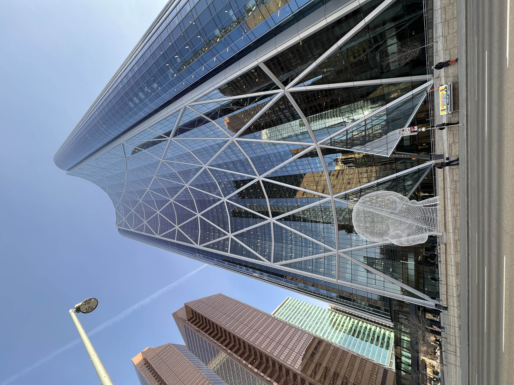

I am an international student in Canada and a tech enthusiast, currently studying Software Development at Bow Valley College.
My passion for technology is matched only by my love for cooking and exploring culinary arts. I have a strong background in teamwork,
and problem-solving skills, which I have developed through various experiences, including my education and extracurricular activities.
I have experience with various programming languages and technologies, including Java, HTML/CSS and JavaScript.
Additionally, I have completed certifications in Business Management Accounting.
| Studied Program | Year |
|---|---|
| Diploma in Software Development, Bow Valley College, Calgary | 2023 - Present | Certificate in Business Management Accounting, CIMA | 2021 - 2022 |
| Company | Position | Year |
|---|---|---|
| Hot Toys Limited | Business Marketing | 2020 - 2022 |
In my free time, I enjoy participating in outdoor activities such as hiking and camping. I am also passionate about technology and enjoy staying up-to-date with the latest advancements in the field.
I have demonstrated leadership and teamwork skills through various experiences, including leading group projects during my studies and participating in team-building activities.
| Organization | Role | Year |
|---|---|---|
| Red Cross | Volunteer Coordinator | 2021 |
I love taking photos. It’s a way for me to save special moments and share them with others. When I’m out exploring new places or enjoying nature, I use my camera to keep those memories.
Every picture I take tells its own little story. Whether it’s a big mountain view, the details in a leaf, or the busy streets of a city, I try to show how beautiful these scenes are.
That's my LITTLE HOPE ...
[Feel free to click the pictures...]
Here are some of the projects I have worked on:
| Project | Description |
|---|---|
| Project 1 | Created a website for a local kindergarten, implementing HTML, CSS, and JavaScript. | Project 2 | Developing a database management system for a local college project, using MySQL and PHP. |
You can reach out to me via email at k.poon276@mybvc.ca or connect with me on LinkedIn.